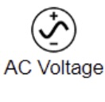
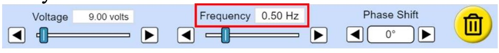

Впишіть ваш клас
Впишіть ваше прізвище та ім'я
Хід роботи
Теоретичні відомості
Повний опір кола, яке містить активний, індуктивний опори і ємнісний опори, обчислюють за формулою:
Якщо ємнісний опір XC відсутній, а активний опір R набагато менший за індуктивний опір котушки XL, то ємнісним і активним опором можна знехтувати. Тоді повний опір кола дорівнює:
Для визначення повного опору Z можна використовувати формулу закону Ома для ділянки кола, вимірявши амплітудне значення змінної напруги на кінцях котушки Umax і амплітудне значення сили струму Imax в ній:

Враховуючи вираз  , індуктивність котушки можна визначити за формулою:
, індуктивність котушки можна визначити за формулою:
Підготовка до експерименту
1. Перейдіть за посиланням або QR-кодом та налаштуйте параметри як показано на рисунку:
2. Натисніть кнопку Advanced та за допомогою повзунка  встановіть опір джерела змінної напруги 1 Ом (Source Resistance).
встановіть опір джерела змінної напруги 1 Ом (Source Resistance).
3. Складіть електричне коло (рис. 1), з'єднавши між собою, такі елементи кола: регульоване джерело змінної напруги ; дріт (всі елементи з'єднуємо дротом); амперметр; ключ; котушка змінної індуктивності (за рахунок зміни кількості витків котушки); вольтметр.
Рисунок 1
4. Для візуального сприймання інформації підключіть до котушки осцилограф для спостерігання змінної електричної напруги та в будь-яку точку кола осцилограф для спостерігання змінної сили струму (рис. 2).
Рисунок 2
Експеримент
Результати вимірювань і обчислень відразу заносьте до таблиць
1. Визначте частоту зміни напруги в мережі. Для цього в електричному колі натисніть на регульоване джерело змінної напруги та в меню, що з'явилося знизу зніміть покази частоти зміни напруги в мережі . Результат занесіть до таблиці. При проведенні всіх дослідів залишайте частоту незмінною.
2. Замкніть ключ. Впродовж 5-10 секунд спостерігайте за зміною показів усіх приладів. Натисніть на кнопку паузи 
3. Зніміть покази вольтметра. Натискайте на кнопку вперед і спостерігайте, як точка на графіку рухається доти, доки не досягне найвищого положення, яке буде відповідати амплітудному (максимальному) значенню напруги Umax (рис. 3). Результат занесіть до таблиці.

Рисунок 3
4. Аналогічно пункту третьому зніміть покази амперметра. Натискайте на кнопку вперед і спостерігайте, як точка на графіку рухається доти, доки не досягне найвищого положення, яке буде відповідати амплітудному (максимальному) значенню струму Imax (рис. 4). Результат занесіть до таблиці.

Рисунок 4
5. Збільшіть напругу на регульованому джерелі змінної напруги та зніміть покази амперметра та вольтметра як описано в пунктах 2-4. Для цього в електричному колі натисніть на регульоване джерело змінної напруги та в меню, що з'явилося знизу за допомогою повзунка збільште значення напруги на 10 – 30 В. Натисніть на кнопку плей та повторіть дії описані в пунктах 2-4. Щоб правильно відображалися графіки напруги та сили струму можете змінювати їх масштаб за допомогою кнопок 
6. Ще двічі змініть в сторону збільшення напругу на джерелі струму і зніміть покази амперметра і вольтметра відповідно пунктів 2-4. Результати занесіть до таблиці.
| № досліду | Частота зміни напруги в мережі ν, Гц |
Амплітудне значення змінної напруги Umax, В |
Амплітудне значення сили струму Imax, А |
Повний опір Z, Ом |
Індуктивність котушки L, Гн (H) |
Середнє значення індуктивності Lсер, Гн |
Відносна похибка ε, % |
| 1 | |||||||
| 2 | |||||||
| 3 | |||||||
| 4 |
Опрацювання результатів експерименту
1. Для кожного досліду обчисліть повний опір і запишіть ці значення у таблицю:

2. За результатами обчислень повного опору Z розрахуйте для кожного досліду індуктивність котушки і запишіть ці значення у таблицю:
3. Визначте середнє значення індуктивності котушки і запишіть це значення у таблицю:
4. Визначте номінальне значення індуктивності котушки Lном. Для цього в електричному колі натисніть на котушку  зніміть покази індуктивності котушки Lном
зніміть покази індуктивності котушки Lном
5. Обчисліть відносну похибку вимірювань індуктивності котушки і запишіть це значення у таблицю:

Аналіз експерименту та його результатів
Проаналізуйте експеримент і його результати. За результатами експерименту сформулюйте і запишіть висновок, у якому зазначте:
1) які фізичні величини ви вимірювали безпосередньо і яку обчислювали;
2) яким є результат обчисленої величини;
3) чи залежить індуктивність котушки від поданої напруги;
4) причини похибки.